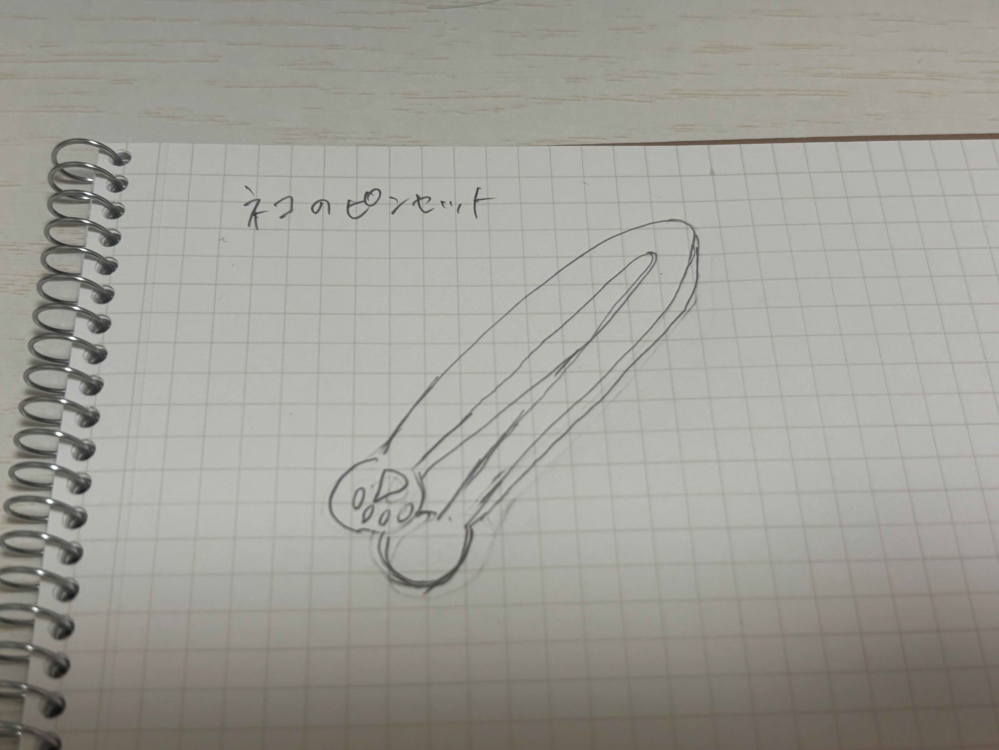
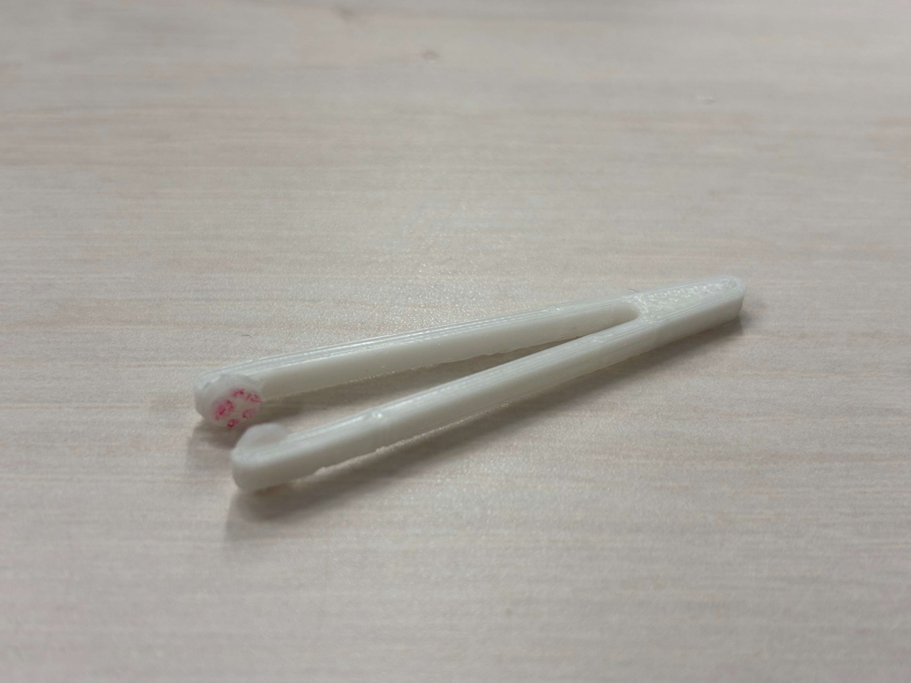
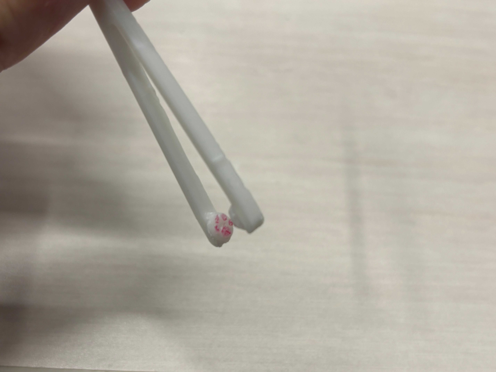
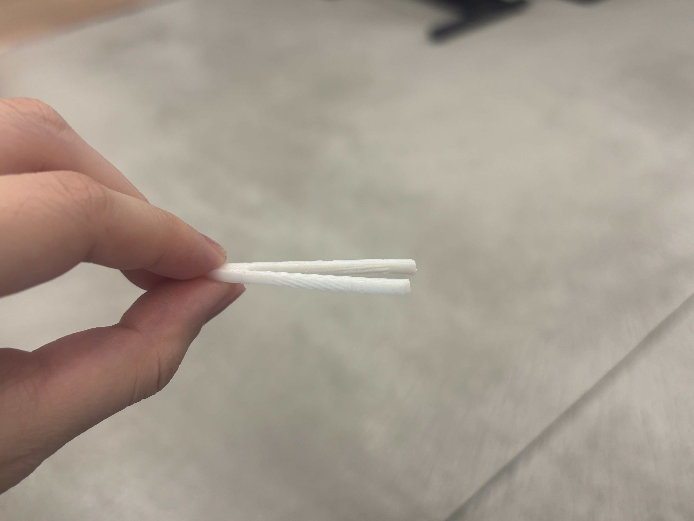
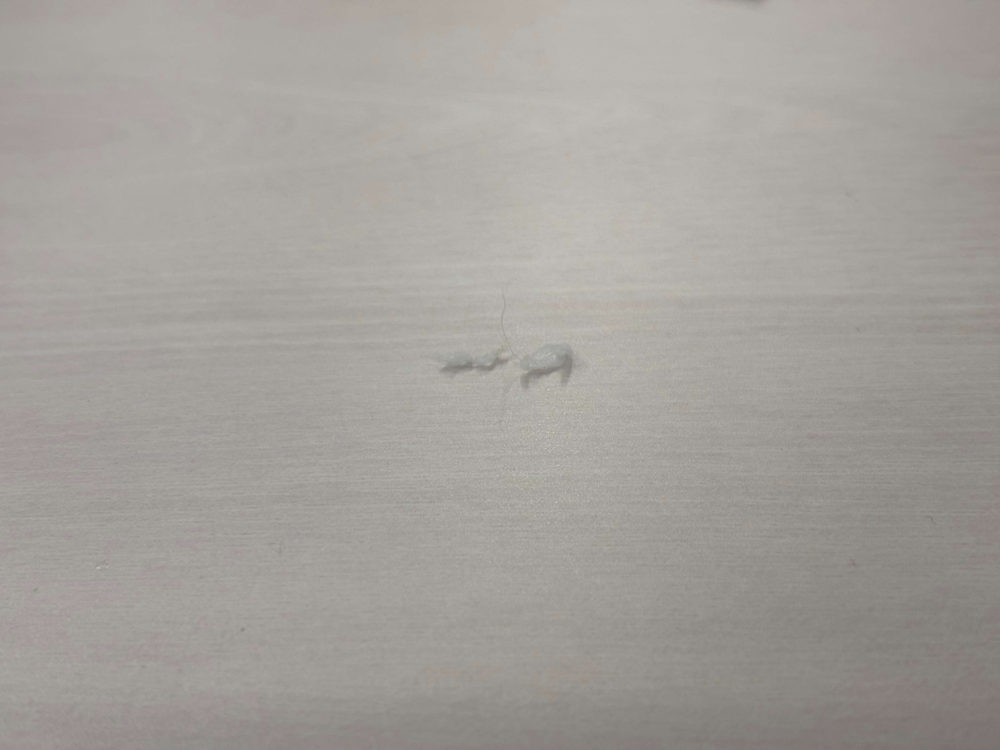

作品タイトル:猫の手も借りたい！ピンセット
《構想図》

《完成品》


《設計ファイル》
ピンセット部分
肉球部分
《作品の説明》
タイトルの通り、猫の手も借りたいときに使う肉球付きのピンセットです。
ことわざの意味に合わせ、役に立たない猫の手を表現するためにあえて爪をつけず、細かい作業のできない形にしてあります。
《なぜこの作品を作ったのか》
私は大の猫好きで、一人暮らしを始め実家の猫に会えないのが寂しすぎるがあまり猫をデザインに取り入れたいと思い、肉球のピンセットを作ろうと考えました。猫の肉球は見た目が可愛いだけでなく、触りたくなるような魅力があるため、普段使う道具に取り入れることで、使うたび幸せな気持ちになれると思いました。
《製作プロセス》


ピンセットはうまくいったが、肉球がプリントされずぐちゃぐちゃに。
そこで、肉球と土台の厚さをそれぞれ0.5ミリ厚く設定。